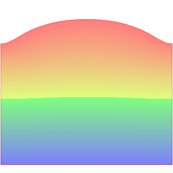
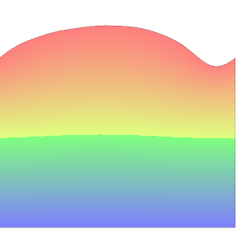
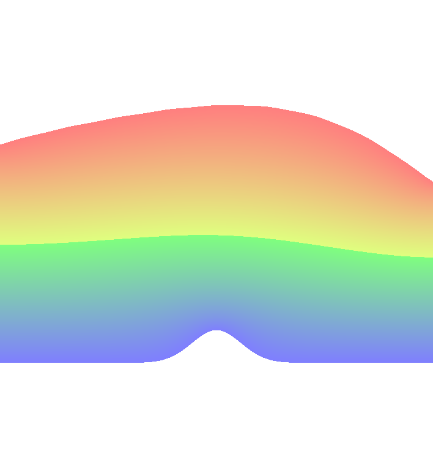
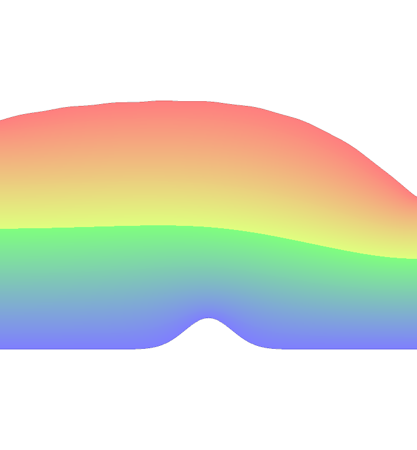
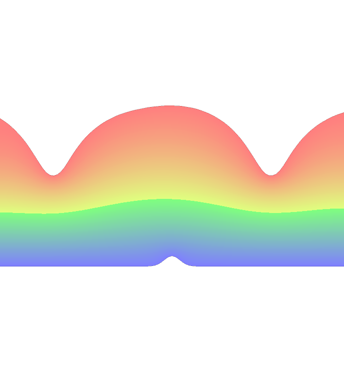

Beniamin BOGOSEL
Critical waves using shape optimization
In collaboration with Dorin Bucur and Emilian Parau.
We consider the problem of minimizing the functional $$\mathcal{F}(\Omega) =\frac{\mu^2}{\int_\Omega |\nabla h|^2}+\int_\Omega gy +\alpha \text{Per}(\Gamma) $$ where $\Omega$ is a domain in $\Bbb{R}^2$ bounded by the lines $y = 0$, two vertical lines and the graph of a function which is denoted by $\Gamma$. We can easily see that this is a free boundary problem, the free part of the boundary being $\Gamma$. The function $h$ satisfies the PDE $\displaystyle \begin{cases} -\Delta h = 0 & \text{ in }\Omega \\ h = 1 & \text{ on } y = 0\\ h = 0 & \text{ on } \Gamma \end{cases}$. On the vertical boundaries we either consider periodic boundary condition or Neumann boundary conditions.
First we provide some existence results of an optimal shape under area constraint. Using shape derivative arguments we may observe that an optimal shape satisfies the Bernoulli condition on the free boundary $\Gamma$: $c |\nabla h|^2 + gy+\alpha \kappa = \text{constant}$
Below you can see some preliminary numerical results. The implementation is done in FreeFem. We consider situations with flat or non-flat bottom.
 |
 |
 |
 |
 |
 |
← Back to numerical computations
Created: Apr 2016